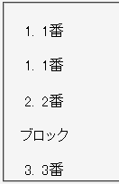
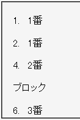

順序つきのリストマーカーを設定しているリストアイテム要素は、同じ階層にあるdisplayプロパティの値がlist-itemでないブロックレベル要素もカウントの対象にする。このため、途中の番号が飛んでしまったかのように表示されることがある。
<ol><li>1番</li></ol> <div style="margin-left:40px; display:list-item; list-style-type:decimal;">1番</div> <br> <div style="margin-left:40px; display:list-item; list-style-type:decimal;">2番</div> <p>ブロック</p> <div style="margin-left:40px; display:list-item; list-style-type:decimal;">3番</div>
ブロック
displayプロパティにlist-item値を指定したdiv要素のリストマーカーの数値は、br要素やp要素を除外して数えるはずです。
Opera7.50標準モード
WinIE6.0標準モード
リストごとにリストアイテム要素をブロックレベル要素で括ることでこの不具合を回避することができます。
<ol><li>1番</li></ol> <div> <div style="display:list-item;">1番</div> <div style="display:list-item;">2番</div> </div> <p>ブロック</p> <div> <div style="display:list-item;">3番</div> </div>
ブロック